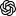
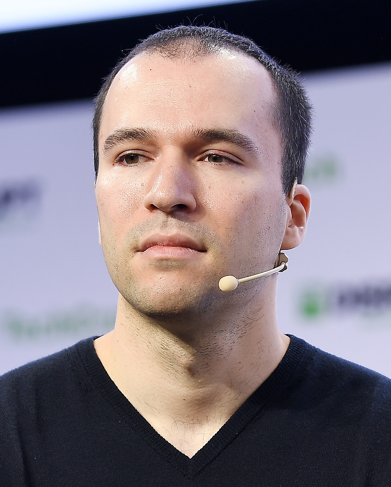
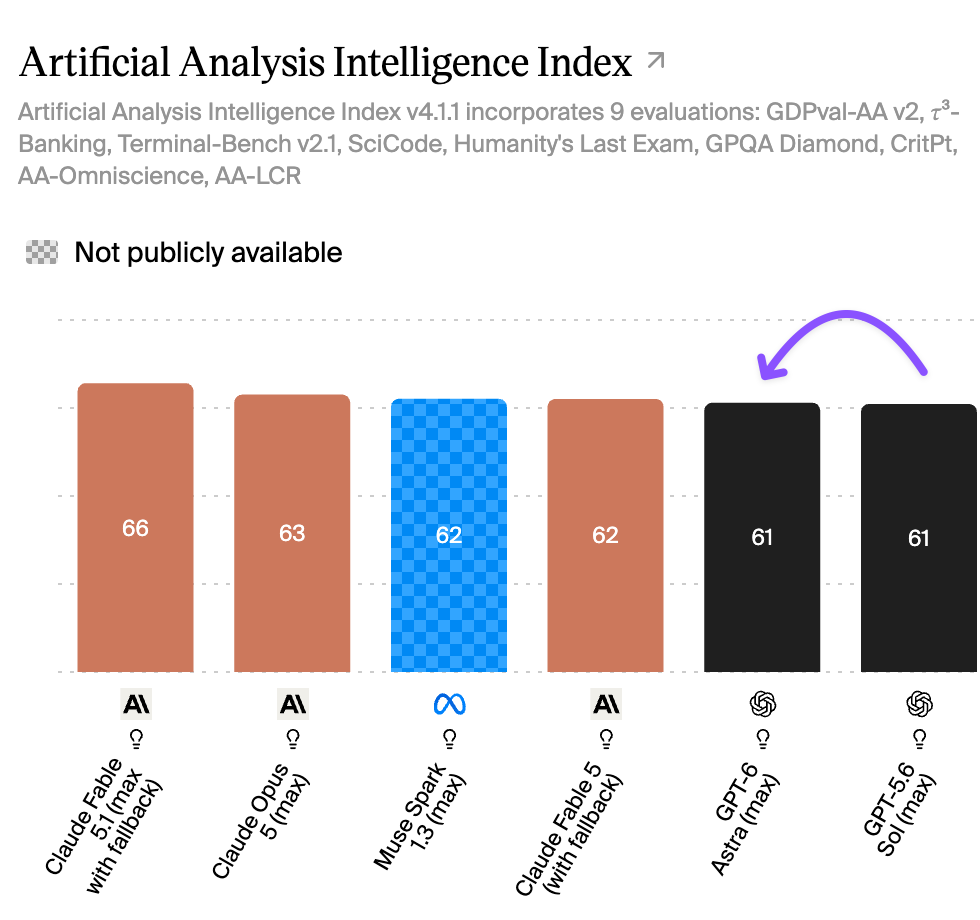

Mas se acalmem, a AGI ainda não está entre nós
Greg Brockman fechou o lançamento do GPT-6 dizendo:
Mas o conceito de AGI ainda não é algo bem definido

O ARC-AGI-3 é um teste que mede a capacidade de um modelo no eixo AGI. Ele gera um mini-game nunca visto pela IA, o que teoricamente testa a capacidade dela de generalizar inteligência em tarefas novas. Nesse contexto, o ChatGPT-6 foi muito bem, com 99,9% de acerto.
Mas tem um detalhe importante...
Em uma analogia simples, isso é como se uma escola estivesse tentando provar que seus alunos são melhores fazendo uma prova internamente como medida. O ideal mesmo seria que esses alunos fossem testados por uma instituição independente.
No Intelligence Index, o GPT-6 fez 61 pontos, a mesma qualidade que o modelo da série anterior, o GPT-5.6. Já o Claude Fable 5.1 da concorrência fez 66 pontos.

E o fato mais importante: apesar do resultado não ter mudado no Artificial Analysis,
O milhão de tokens de entrada saiu de 4 dólares para 10. O de saída, de 20 para 50. 150% mais caro, e praticamente o mesmo resultado.
A taxa de alucinação caiu de 92% para 51%. Ainda é alta. Mas é o salto mais claro desse lançamento.
O modelo empatou em muitos testes importantes com o anterior, e ainda está abaixo do Fable 5.1, lançado na mesma semana pela Anthropic. Se a Anthropic, que também tem conflito de interesse, não puxou o argumento de AGI, acho seguro dizer que ainda não estamos lá.
Eu escrevi um artigo detalhando melhor esse comparativo entre o GPT-6 e os modelos que já foram lançados.